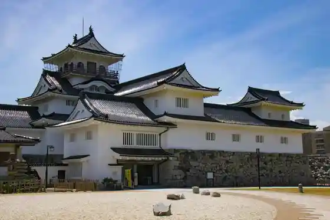
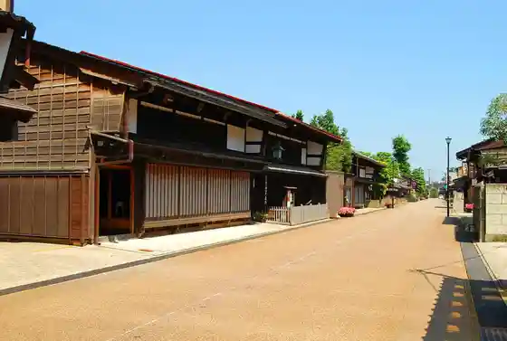
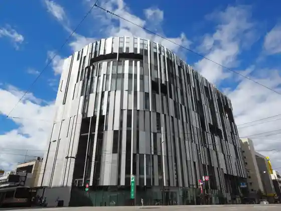
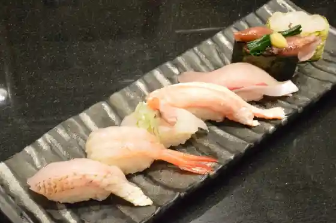

Toyama, Toyama
Toyama · Toyama
Toyama
Highlighted on the Toyama map.

Sights
Toyama Shiro / Toyama Kyodo Museum

Iwase Machimeguri

Toyama Garasu Art Museum

Mawaru Toyama Wan Sushi Tama Toyama Eki Mise

Fugan Unga Kan Mizu Park
Toyama Sushi Umi Toyama
Ikeda Ya Yasube Shoten
Fugan Suijo Line
Toyama Yakusho Temboto
Toyama Ken Art Museum
Toyama Garasu Workshop
Sha Iori Toyama Sushi
Yoshino Sushi
Roadside Station Hosoiri
Kaiten Toyama Sushi Toyama Ekimae Mise
Shintsu Kyo
Toyama Castle Park
Toyama Famirii Park
Kameya Onsen Shirakaba Baths
Sutabakkusu Kohii Toyama Kan Mizu Koen Mise
KOBO Brew Pub
Ryoshi Sushi Yu
Shaseki
Sushi Ryu Yuki Suke
Edo Mae Sushi Sei
Miki Sushi Main Shop
Toyama Minzoku Mingei Village
Sharaku
(Totoyama) (Toyama Ekimae)
Toyama Tourist Information (Toyama Ekikonai Kurarute 1F)
Iwase Hama Beach
Kuni Toroku Yukei Bunkazai Kyu Baba Ie House
Igaya Sekisho Kan
Saiku Kamaboko
Kitamae Fune Kaisen Tonya Moriya
Shiro Yachi Ya Toyama Ekimae Mise
Ho Sushi Bunke
Masuda Shuzo Mise
Toyama Ken Suiboku Art Museum
Yume Hachi
Ume Kama Museum U-mei Kan
Masu no Sushi Honpo Gen Masu no Sushi Museum
Toyama Kagaku Museum
Nakajima Komon
Ho Sushi Honke
Fukushima Baths
Toyama Wan Sushi Settokupon
Kureha Kyuryo (Kureha Sanko Sono Lookout)
Abanpureisu
Gin Cho ikizushi Toyama So Kuruwa Mise
Toyama Minato Lookout
Mizuhashi Shokudo Gyofu
Iwase Kanaru Hall
Takashi no Kuni Literature Museum
Yao no Machinami (Suwa Town Hondori / Saka to Ishigaki no Streetscape)
Toyama Chihotetsudo
Matsuzuki
Masuzushi Tsukuri Experience (Masu Hisashi Shi Honpo Chitose)
Toyama Chihotetsudo Sukaibasu Toyama (Sakura Kosu Toyama Nai Kosu)
Fuki Garasu Experience (Toyama Garasu Workshop)
Arimine Shinrin Bunka Village
Toyama Ekuseru Hotel Tokyu
Toyama Chihotetsudo Toyama Minato Sen
Kasuga Onsen Sato
Shusui Art Museum
Matsukawa Yuransen
Ribaritoriito Gagaku Gu
Gyaruri Mire
Arupusuekisupuresu
Hisashi Shi Tokoro Sasaki
Ganyaku Zukuri Experience (Ikeda Ya Yasube Shoten)
Taizo Glass Gallery
Japanese Restaurant GEJO (Gejo)
Daburutsurii by Hiruton Toyama
Wari Yama Forest Park Ten Mizumi Mori
Piatto Suzuki Cinque
Tateyamasanroku Ski Area
Eiju Tsukasa
Hama Kurosaki Campground
Tateyamasanroku Kazokuryoko Village
Toyama Kenminkaikan Bunkan Gono no Kan Uchiyama Tei
Yao Owara Museum
Toyama Ken Gokoku Shrine
Kanko Ressha (Ichiman Sanzen Shaku Monogatari)
Toyama Kenminkaikan Bunkan Yakushu Sho no Kan Kaneoka Tei
Baiyaku Yadoya Yama Ki
Ushi Gaku Oto Campground Kirara
Kodo no Mori Onsen
Mizuhashi Fisshariina
Yao Yume Forest Yuyu Kan
Masu no Sushi Tezukuri Experience (Masu no Sushi Museum)
Shiki Bosai Kan
Ushi Gaku Onsen Kenko Center
Kocha no Mise Anazahoride
Sushi Izakaya Kozaru
D&DEPARTMENT TOYAMA
Toyama Prefectural Itaiitai Byo Museum
Mutenka Chokoreto Senmonten Humming Bird
Toyama Kenchu O Botanical Garden
Kureha Yama Park Miyako City Ryokka Botanical Garden
Kaiteki Uerunesu Hotel Toyama Jiyu Kan
Toyama Sushi Ramen
Motomiya Sabo En Tsutsumi
Sarukura Yama Forest Park (Campground Lookout Babekyuhausu)
Tateyamasanroku Mauntenkato
Toyama Sato Kinen Art Museum
Hokurikudenryoku Arimine Dam
Kitanihon Shimbun Etchu Za
Kan Mizu Terasu
Fumi Kikuzake Zo
Shintsu Kyo Iwa Ine Onsen Raku Kyo Kan
ANA Kuraun Plaza Hotel Toyama
Jiba Mon Ya Shokudo fil
Okusukanaru Park Hotel Toyama
Historic Site Yasuda Castle Ruins
Gokkopaku
Saiku Kamabokozukuri Experience (Ume Kama Museum U-mei Kan)
Toyama Kitokito Airport
Masu no Sushi Ganso Seki no Ya
Toyama Ken Shizen Hakubutsu Sono Nei Village
Matsukawa Beri / Matsukawa Cherry Blossoms / Matsukawa Yuransen
Osawano Uerunesu Resort Uindi
Kitsuno Tomo Shuzo
Yae Tsu Hama Beach
Toyama Ken Kuko Supotsu Ryokuchi Inkurushibu Hiroba
Yamafujibudo Sono Horaisanwainarii
Shiro Sushi
Keiju Sha Washi Bunko
IMMERSIVE SAUNA
Toyama Eki Teiryujo
Tsuriya Higashi Iwase
kitchen&cafe GAREGARE
Toyama Machinaka Tourist Information (Samuraiekusuperiensu Toyama)
Yakushidake no Kenkoku Gun
BiBiBi & JURULi
Hebi no Me Hisashi Shi
Toyama Prefectural Library
Sentoramu
Miki Ta Sushi
Tateyamasanroku Onsen
Autumn Leaves Kaku
Sake Kyo Tanoshiku Chiiwa
Toyama Ekotaun Koryu Suishin Center
Shin Village Kojimiso Shoten
Shima Kawa Ame Mise
Fuku Tsuru Shuzo
Hikiami Kogetsu Do
Shiin Experience (Shaseki)
Sushi Namba
Kitadai Jomon Plaza
Suroraifu Farm Himawari Hatake
Awasu no Ski Area
Ryori Ryokan Kita Kichi
Hokurikudenryoku Enerugii Science Museum Wanda Rabo
Toyama Arupen Nyugyo
Jiba Mon Ya So Main Shop
Ichiban Town Kohii
Kaku Gan Tera (Jiin Koyasan Shingonshu)
Hokai Yama Joraku Tera
Kongo Doyama
Tennen Onsen Tsurugi Baths Onjuku no no Toyama
Otokawa Kanko Budo Sono
Yao Hikiyama Tenjikan
Tanihata
Sho Kura Kameju Do
Daburudekkaekisupuresu
Pumo Ri
Chikurin Domoto Ho
Glass Cafe Clie (Kurie) * Toyama Garasu Kobo Heisetsu Kafe
Sushi Junpu Manpan
Iso Sushi
Honpo Tera
Tama Asahi Shuzo
Yoshidaya Masu Hisashi Shi Honpo
Sanuki Udon Kojitsu Iori
Oyama no Yama Village Koryu Center
Ko Kan Do Ko Kan Do Museum
Shiraki Mine 21 Seiki Forest Shinrin Gakushu Tenjikan
Etchu Ryori Goman Ishi Main Shop
Sugigataira Campground
Matsukawa Chaya (Matsukawa Yuransen no Riba)
Shinshu Otani Ha Hongaku Tera
Monmyo Tera
Ushi Gaku Onsen Ski Area
TOBIRA
Sushi Tsuka Ta
Hanshin Kaseikogyo
Matsukawa Beri Chokoku Park
Hotel Guranterasu Toyama
Ukita Ie
Raku Sui Tei Art Museum
Swallow café
Tsune Nishi Aikuchi Yosui
Hokurikudenryoku Okubohatsu Den Tokoro
grin the cafe
Ritchieru
Tenpura Makoto shin
Berii Berii Yamii
Asahi Insatsu Toyama Kojo
Hotel Visukio Toyama by GRANVIA
Borudaringujimu Retorasu
KNB Irifunekodomo Kan
Toyama Kankyoseibi
Katsura no Shimizu
Aji Sai Oyama
(Tomo)
Sarukura Castle Ruins
Tonosama Shimizu
Toyama Ken Gorufu Renmei
Ikeda Ya Yasube Shoten Kenko Zen Kusuri Miyako
Herushii Ga Ki & Ranchi no O Mise Yusu Maru
Nidaime Aka Nabeya
Matsu Sumisho Mise (Rosoku Mise)
Nihonkai Gasushorumu Prego
Hashimoto / Fitto Chan Land Seru Kojo
Oyama Folk History Museum
Yao Shintsu Sakura Tsutsumi
Ippei Hisashi Shi Main Shop
Ushi Gaku Onsen Kenko Center Yuki Tsubaki
Toyama Ken Kyoiku Memorial Museum Museum
Hanagata
Kitsuke Experience (Kimo no Yorozu Ya Ka In Tei)
Etchu Fudo
Takeshima Shokuhin
Yu Raku Kan Haru Haru Do CiC Mise
San Jo no Tanada
Toyama Yakusho